Care that runs itself, until it needs you.
Kindred Care is a concept app for family caregivers. It coordinates a patient’s prescriptions, home-health visits, care team and billing, and asks the caregiver to act only when a decision is truly theirs.
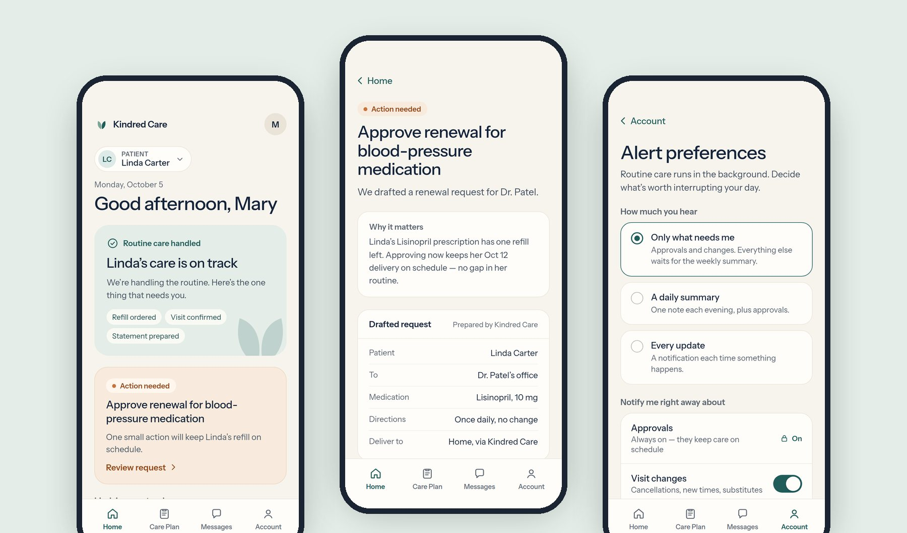
- Role
- UX designer - sole author
- Context
- Family caregivers juggle pharmacies, home-health agencies, doctors and bills. Each piece works on its own. Together they become a second job with no interface.
- Design question
- How might we make routine care run itself, and bring the caregiver in only when a decision is hers?
- What I owned
- Persona and jobs to be done
- Service model and experience principles
- Information architecture and flows
- Visual system and voice
- 12-screen interactive prototype
- Methods
- Persona from the course brief
- Jobs-to-be-done framing
- Manage-by-exception service model
- AI-assisted rapid prototyping
- Accessibility review
Course project. Concept prototype. Not yet tested. Kindred Care is a fictional service I designed for a graduate UX prototyping assignment. The persona, patient, care team and every number in the app are fictional sample content. No usability testing has been run yet, no real patients or health data are involved, and the concept is a care-coordination tool, not a medical device.
Caregiving is a second job with no interface.
The brief described an adult daughter caring for her mother with Alzheimer’s at home. Her problem isn’t a lack of services. It’s that every service needs her to coordinate it: refills, visit times, nurse updates, insurance and bills all route through one overloaded person.
Fragmented
Pharmacy, agency, doctor, insurer and billing each have their own portal, phone line and timing. The caregiver is the integration layer.
Always on
Routine updates arrive with the same urgency as real problems, so everything feels like it needs attention, all the time.
Invisible
Nothing shows what is already handled and what is at risk, so the only way to feel sure is to check everything yourself.
Designing for a daughter, not a “caregiver burden.”
The persona came from the course brief. I treated everything beyond it as an assumption to validate, and wrote her jobs to be done in her terms rather than the healthcare system’s.
Mary, 35
Finance professional, married, DFW suburbs. Her widowed mother, Linda, who has Alzheimer’s, recently moved into Mary’s home. Mary is an only child.
“I want to set up Mom’s care once, then only hear about what actually needs me.”Persona statement · fictional
Life
- Frequent 80-hour work weeks
- Wants time back for her marriage, friends and health
- Every care decision lands on her
Tech
- Early adopter, comfortable with apps
- Pays for subscriptions that buy back time
- Expects premium, polished products
Goals
- Trust that routine care is running
- Know Mom is okay at a glance
- Act quickly when something needs her
Frustrations
- Chasing updates across portals and calls
- Can’t tell routine from urgent
- Worry that something is slipping
| When… | I want to… | So I can… | Answered by |
|---|---|---|---|
| Care is new and overwhelming | set everything up once | stop being the integration layer | Onboarding |
| I have two minutes between meetings | see whether anything needs me | get back to my day without worrying | Home |
| A decision really is mine | understand it and act in one step | keep care on schedule | Action needed |
| I’m off the clock | control what interrupts me | be present with my family | Alert preferences |
| I can’t carry it all alone | share access with people I trust | spread the load safely | Care circle |
Routine care runs in the background. The app speaks up only when a decision is hers.
Manage by exception. Refills, deliveries, visit booking, care notes and insurance claims happen automatically. The caregiver is asked to act only when a decision is legally or personally hers, like approving a prescription renewal. Everything else waits for a calm weekly summary.
Six principles, each tied to a visible decision.
| Principle | What it means | Where it shows up in the prototype |
|---|---|---|
| Automation first | Show that routine work is already handled. | “Refill ordered · Visit confirmed · Statement prepared” on Home; a “Handled automatically” list on the care plan. |
| Manage by exception | What needs attention, why, and one next step. | A single amber card on Home leads to one drafted request and one button. |
| Family-centered | The patient is a person; the caregiver has a life. | Patient preferences, a care circle, and quiet hours for the caregiver. |
| Simple under stress | Every screen understood in a few seconds. | One question per screen, large type, one primary button. |
| Trust through transparency | Show what happened, what’s next, and what it costs. | Delivery and renewal timelines; an itemized statement with the insurance credit. |
| Respectful aging | No stereotypes or helpless imagery. | Copy describes the patient’s day and routine, never her deficits. |
The clickable prototype.
Twelve connected screens with working states: onboarding, approvals, rescheduling, messaging, payments, alert settings and care-circle invites. Start at the welcome screen, or jump in with a task.
- Set up care for a new patientFrom Welcome, tap Get started. Choose who you’re caring for, connect their care, and pick how much you want to hear.
- Handle the one thing that needs youOn Home, open the amber card, review the drafted renewal and send it.
- Reschedule today’s nurse visitHome health → Reschedule → pick a new time with the same care team.
- Protect your eveningAccount → Alert preferences. Try muting approvals (you can’t), then turn on quiet hours and save.
- Share the loadAccount → Invite someone to help. Choose view-only or view-and-approve.
- Find the late deliveryPrescriptions → Track delivery. Notice it’s late but tells you there’s nothing to do.
Five moments that carry the experience.
Set it up once.
Three short steps replace a dozen phone calls. Connections are optional, with a human coordinator as the fallback, so no step can trap someone who doesn’t know their pharmacy’s details. The last step asks how much they want to hear before anything has been sent.
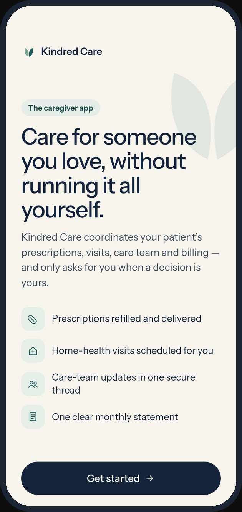
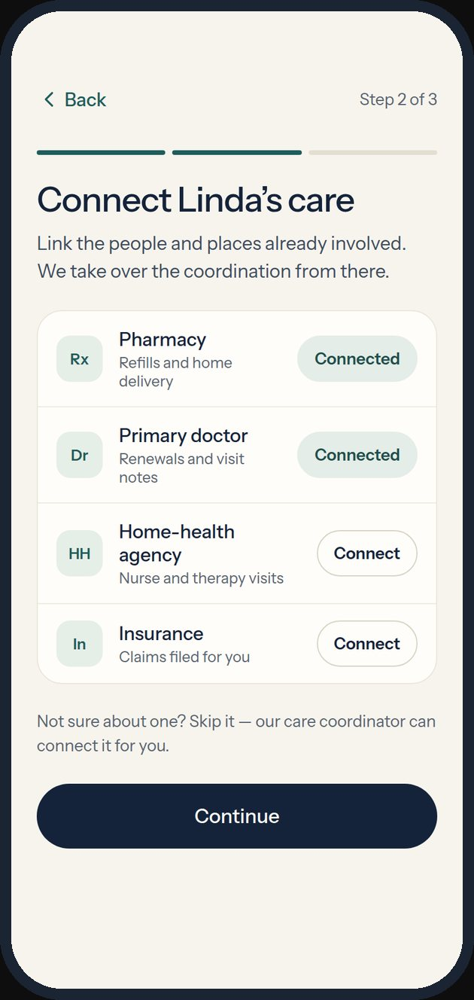
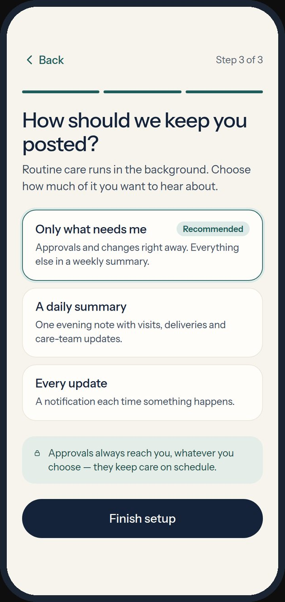
One amber thing.
Home leads with reassurance, then the single item that needs her. The renewal is already drafted: she sees why it matters, what will be sent and to whom, and sends it in one tap. The confirmation shows what happens next so she doesn’t have to follow up.
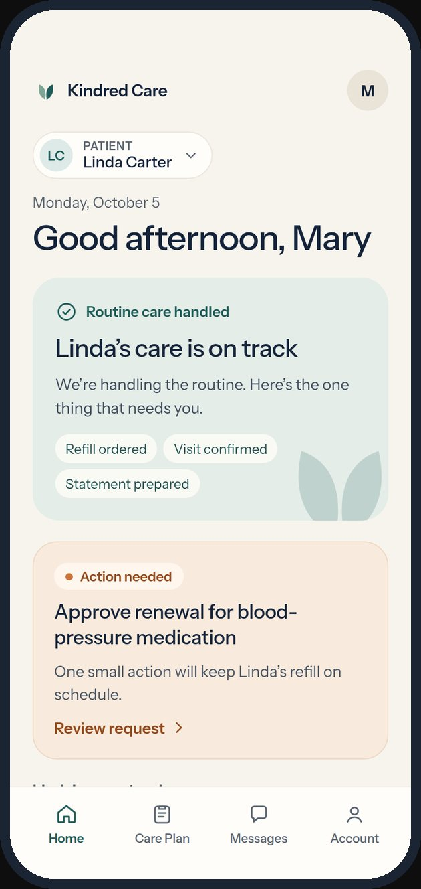
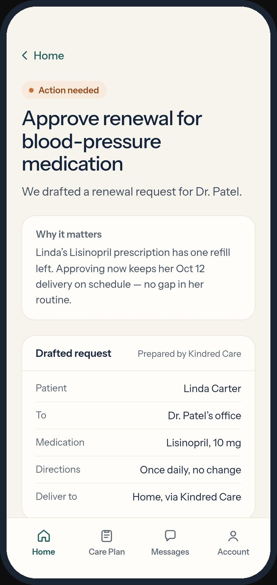
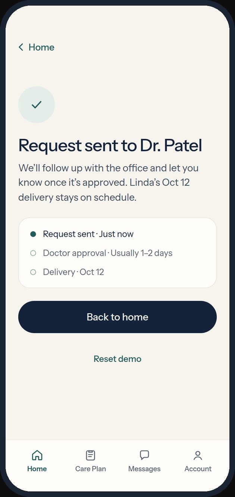
Late isn’t urgent.
Most products show only the happy path. Here a delivery is running a day late, but the patient has enough supply, so it’s shown in neutral tones with a clear “nothing you need to do.” Separating noteworthy from actionable is what keeps the amber signal meaningful.
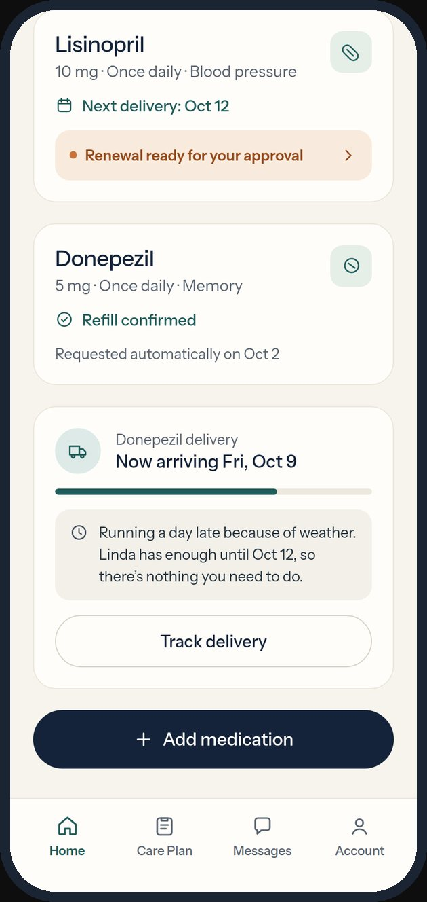
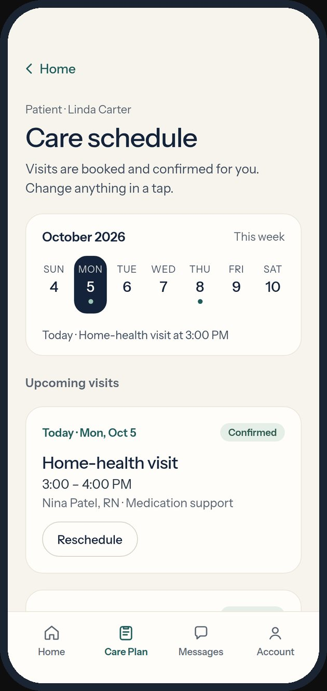
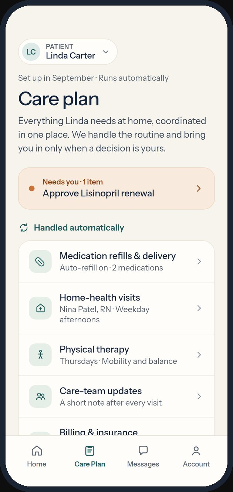
Decide what interrupts you.
Caregivers choose how much they hear and set quiet hours. Approvals can’t be muted, because they keep care on schedule; the lock explains why instead of hiding the switch. The care circle shares the load with permission levels: view only, or view and approve.
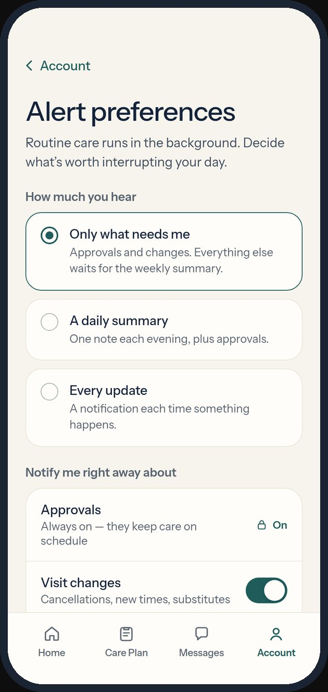
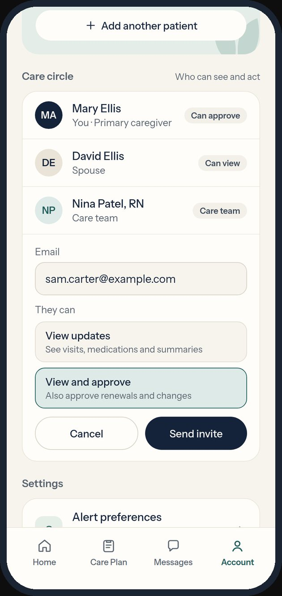
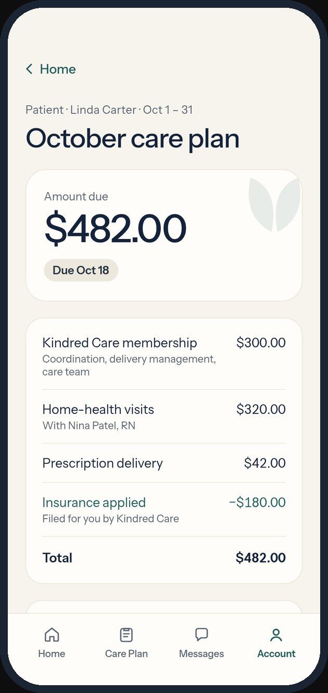
Informed without checking.
A weekly summary replaces the urge to open the app daily: visits completed, doses delivered, notes from the nurse, and what was handled. Secure messaging keeps the care team one tap away, with a clear path to call and a reminder that emergencies go to 911.
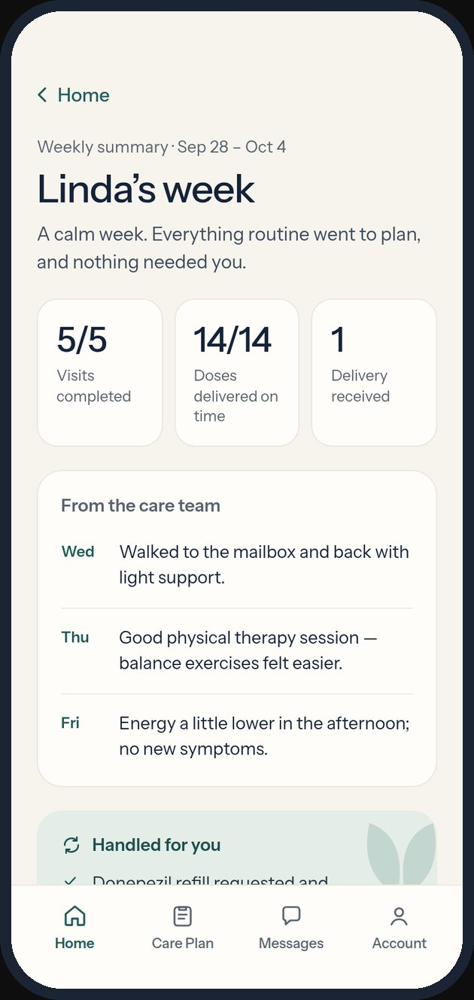
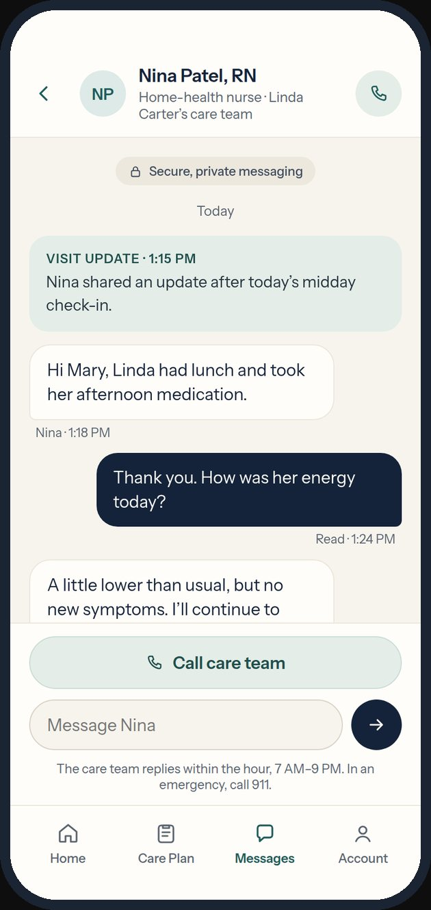
The choices that make it feel calm.
One urgent color in the whole app
Clay amber appears only for “Action needed.” Everything else uses ink, teal and sage. If urgency is rare, it’s noticed.
The app drafts; the doctor decides
Renewals arrive pre-written for review, but nothing changes without the doctor’s signature. Automation removes effort, never judgment.
Some alerts can’t be turned off
Approvals stay on, with a lock and a reason. Flexibility everywhere else makes that one constraint feel fair rather than paternalistic.
Noteworthy is not actionable
Delays, changes and updates get calm, neutral treatment and say plainly when there’s nothing to do.
Caregiver and patient, named clearly
The brief said “Mom.” I generalized to patient and caregiver so the product serves any family relationship, while keeping the patient’s name front and center.
Consumer-health polish, not a portal
The target user pays for premium subscriptions. The look borrows the restraint of wellness tech rather than hospital software.
Warm, quiet, and easy to read under stress.
Warm ivory instead of hospital white, deep ink for type, teal and sage for trust, and one restrained clay accent reserved for exceptions. A soft two-leaf mark suggests two people caring for each other.
| We say | We avoid | Why |
|---|---|---|
| “Linda’s care is on track.” | “All tasks compliant.” | People, not tasks. |
| “One small action will keep Linda’s refill on schedule.” | “Critical notification.” | Urgency that matches reality. |
| “Nothing you need to do.” | Silence, or a warning icon. | Closing the loop is reassurance. |
From the brief’s six screens to a complete product.
The first version followed the assignment closely. The second asked what a real caregiver would need on day one and on a bad day, and filled those gaps.
| Change | Version 1 | Version 2 | Why |
|---|---|---|---|
| Framing | Built around “Mom” | “Patient” and “caregiver,” with the patient’s name throughout | Works for any family relationship |
| Onboarding | None | Three-step setup | The promise is “set it up once,” so setup had to exist |
| Alerts | Implied | Modes, categories, quiet hours, locked approvals | Manage by exception needs a user-controlled threshold |
| Shared care | Single user | Care circle with permission levels | No one should carry it alone |
| Edge cases | Happy path only | Late delivery, explained calmly | Keeps the amber signal meaningful |
| Billing | Line items summed to $182 against a $482 total | Added a $300 membership line | Fixed the brief’s math and made the subscription visible |
| Account | Tab opened Billing | Real Account hub | Every tab earns its place |
Accessible by default, clear about its limits.
- Body text 15–17 px; headings 30–38 px
- Touch targets of at least 44 px
- Text contrast at or above 4.5:1
- Real buttons, links, switches and labeled inputs for keyboard and screen readers
- Status never relies on color alone; every cue carries a text label
- A coordination tool, not a diagnostic or clinical one
- Doctors review and sign every medication change
- Emergency guidance (call 911) on the care plan, messages and account
- Care-team calls ring through quiet hours if urgent
- Copy avoids infantilizing or deficit-focused language
Turning assumptions into evidence.
The prototype is ready for moderated usability testing. The plan below is a proposal; no sessions have been run.
| Task | Assumption tested | Signal |
|---|---|---|
| Five-second Home test | Status and the one exception are clear at a glance | Can they say what needs them? |
| Approve the renewal | A drafted request feels trustworthy | Completion, time, confidence rating |
| Set up alerts | “Only what needs me” is the right default | Which mode they choose and why |
| Explain the late delivery | Calm tone reads as reassuring, not hidden | Perceived urgency, 1–5 |
| Invite a helper | Permission levels are understood | Correct role chosen unprompted |
What this version represents.
What exists today
A complete concept: persona and jobs to be done, a service model, six experience principles, a visual system and voice, and a 12-screen interactive prototype with working states for every key flow.
What does not exist
No usability testing, no real users, no clinical review, and no back-end. All names, medications, visits and amounts are fictional sample data. Test counts above are planning choices, not results.
Notes
- Course context. Created for a graduate UX course prototyping assignment. The persona and core screen list came from the assignment brief; the service model, flows, version-two features and visual system are my own.
- Tools. Prototyped with AI-assisted design and code tools, then reviewed and refined screen by screen against the principles above.
- Health content. Kindred Care is a fictional coordination service. Nothing on this page is medical advice.